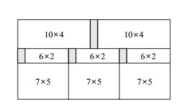

有名的希臘雕刻神菲迪亚斯正在为他下一座雄伟的雕像作准备。为了这座雕像他需要大小为 W1×H1, W2×H2, ...
, WN ×HN 的矩形大理石板。最近菲迪亚斯获得一块矩形大理石块。菲迪亚斯想把这块石板切成所需要的大小。石
板或是石板所切割出的部分都可以由垂直(或水平)方向纵贯(或是横贯)加以切割到底，成兩块矩形石板，同时切割
出的这兩块矩形石板都必须具有整数的宽度与高度。石板只能以此种方法加以切割，同时石板不能粘合成较大石板
。因为石板具有花纹，所以石板也不能旋转。如果菲迪亚斯切割出一块 A×B 的石板，则此石板不能被当成 B×A
的石板使用，除非 A等于 B。 对每一种所需石板大小菲迪亚斯可切割出零或更多块石板。如果当所有的切割完成
时，一块产生出的石板并不是任何所需要的大小，则此石板成为废料。菲迪亚斯想知道如何切割最初的石板，让所
产生的废料最少。举例來說，下图中的原始石板宽度为 21 且高度为 11，而所需石板大小为 10×4,6×2, 7×5
及 15×10, 则最小废料总面积为 10。下图同时画出最小废料总面积为10 的切割方法

你的工作是写一个程序由给定的原始石板大小及所需要的各种石板大小计算出最小的废料总面积。